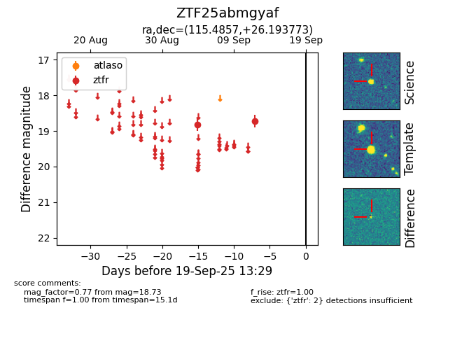

FINK: ZTF25abmgyaf
Lasair: ZTF25abmgyaf
ALeRCE: ZTF25abmgyaf
ZTF25abmgyaf (ztf,fink)
equatorial (ra, dec) = (115.4857,+26.19377)
galactic (l, b) = (193.8200,+22.07615)

last ztfr=18.73
2 ztfr detections